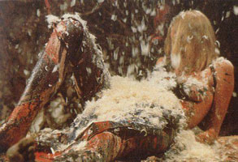
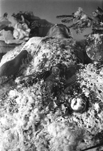
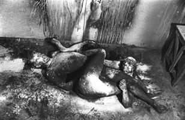
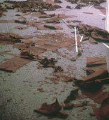
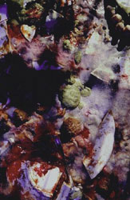
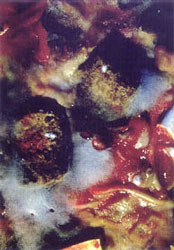
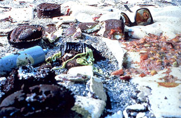

mess
[disorganized distributions involving a variety of materials, including small-grained matter or liquids]

Otto Mühl: Materialaktion # 13, 1964

Otto Mühl: Materialaktion # 15
(Oh Tannenbaum), 1964

Barry Le Va: Third Installation, 1978

Cindy Sherman: Untitled # 182, 1987

Cindy Sherman: Untitled # 238, 1987-1991
Cindy Sherman: Untitled, 1987